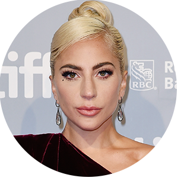

POP
A história da música pop começou em 1950 nos Estados Unidos e Reino Unido, e tem seu nome por ser popular, ou seja, surgida no povo. Ela consiste na incorporação de vários estilos musicais - como o urban, dance, rock, música latina, soul e country-; onde são compostas músicas de duração média-curta, que são geralmente compostas por estrofes básicas de verso-refrão, e tratam de temas universais, como o amor, pra promover identificação.
Nessa visão, o pop é caracterizado por buscar atingir um público geral, ao invés de um subgrupo exclusivo. Ademais, busca usar batidas e ritmos que estimulem a dança, buscando estimular ela em seus ouvintes. As famigeradas “estrelas do pop” também procuram ter uma presença marcante e visual, já que são muito associadas às suas músicas e contribuem para a divulgação delas.
Artistas importantes para o POP
Lady Gaga
Lady Gaga, é uma cantora e empresária estadunidense mundialmente reconhecida. No inicio de sua carreira teve forte influência de David Bowie, Michael Jackson, Madonna e Queen. Ela é a primeira cantora da história a vender 10 milhões de cópias globais com quatro canções diferentes em um ano.
Bruno Mars
Peter Gene Hernandez mais conhecido pelo nome artístico Bruno Mars é um cantor, compositor, produtor musical, dançarino e multi-instrumentista americano, nascido e criado no Havaí. Bruno Mars ganhou aproximadamente 12 prêmios e dezenas de indicações. Foi indicado ao Grammy Awards em 4 categorias, ganhando em “performance de Pop Vocal Masculina”.

Madonna
Madonna é uma cantora, compositora, produtora musical, atriz, escritora, dançarina e empresária americana, conhecida como a "Rainha da música pop", desde os anos 1980. Ela é considerada uma das figuras de maior impacto na cultura popular por sua contínua reinvenção e versatilidade na produção musical, composição e apresentação visual de sua obra.
Rihanna
Rihanna é uma cantora, compositora, atriz e empresária barbadense. Sua carreira artística começou profissionalmente em 2003, quando ela realizou um teste para o produtor musical Evan Rogers e foi aprovada. Além de sua carreira musical, Rihanna também é conhecida por seu envolvimento em causas humanitárias, empreendimentos empresariais e na indústria da moda.